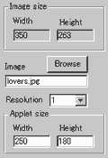
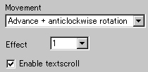
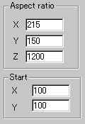

|
This applet creates a tunnel with a selected texture
mapped onto it. Another version of tunnel is available in the name
of tunnel 2 applet.
[For more technical
information about the available parameters, click here.]
Most parameters are self-explanatory and you can
always see brief description of each parameter by moving the mouse
pointer over the wizard.
 |
First set a mapping image, applet size and
the image resolution for the project. The resolution value
higher than 1 stretches the map over the tunnel. I recommend
you not to use too big image for the best result.
|
|
Next, select the motion of the tunnel. There
are 8 possible motion such as:
1) advance
2) back
3) anticlockwise rotation
4) clockwise rotation
5) advance + clockwise rotation
6) advance + anticlockwise rotation
7) back + clockwise rotation
8) back + anticlockwise rotation
|
 |
Next, you can position the camera
either at inside the tunnel (effect no.1) or outside of the
tunnel (effect no.2) at "Effect" parameter. |
Then, you can choose if you want to enable textscroll over the
tunnel effect by checking "Enable textscroll".
 |
"Aspect ratio" parameters control
the inclination of the tunnel, while Start values give the start
point of the internal calculation and you should NOT change
the default values. This may be obscure, but trust me. We provide
the optimised setting for these values. If you change these
values, the result will not be what you expect. |
Proceed to the textscroll
menu if you have checked the textscroll box; otherwise go to
the expert menu.
|